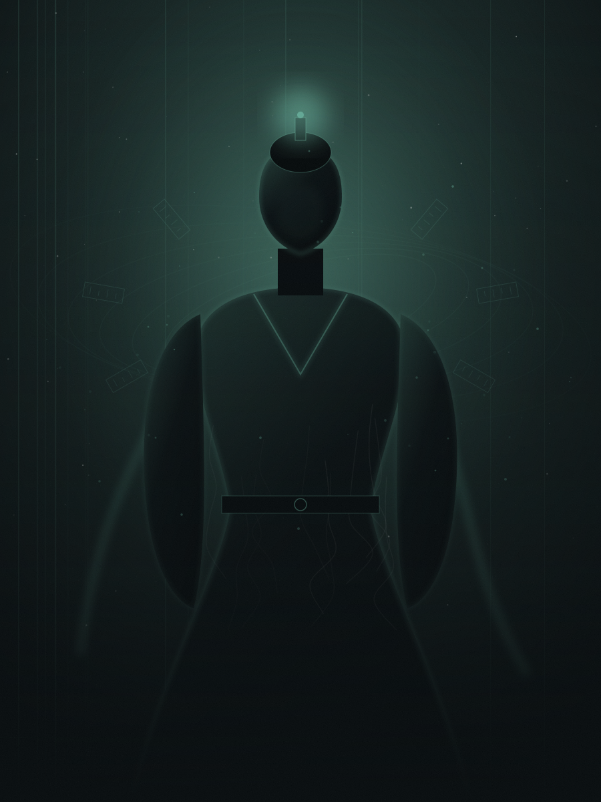
Xuan Zhou · 01
玉虚子Yu Xu Zi
守碑人
昆仑碑前守了四十七年。他不识数，但记得碑上每一道刻痕的位置。他说碑不是用来记年份的，是用来记名字的——那些被界痕吞掉、两界都不再提起的名字。
「碑上刻的不是年份，是我们忘掉的名字。」
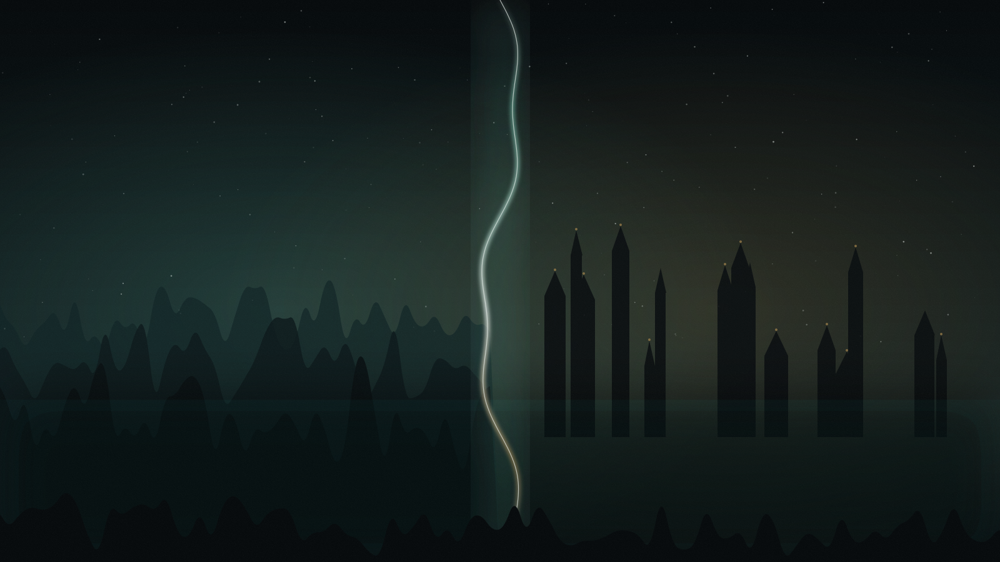
A World Split in Two
纪元一一二七年，大衍之变。
一道宽三里、每年东移七里的界痕，把环宇大陆劈成两半。
东侧的人以身为炉，西侧的人以名为咒。
他们争的不是疆土，是「什么才算存在」。
大衍之变没有敌人。没有天罚，没有神战，没有陨星。那天清晨，环宇大陆中央的麦田里出现了一道细线， 宽不过一指。农人弯腰去看，线里没有底。三天后它宽了三尺，三个月后宽了三里。 学者们后来把它命名为「界痕」，并在命名的那一刻发现——他们无法就「它是什么」达成一致。
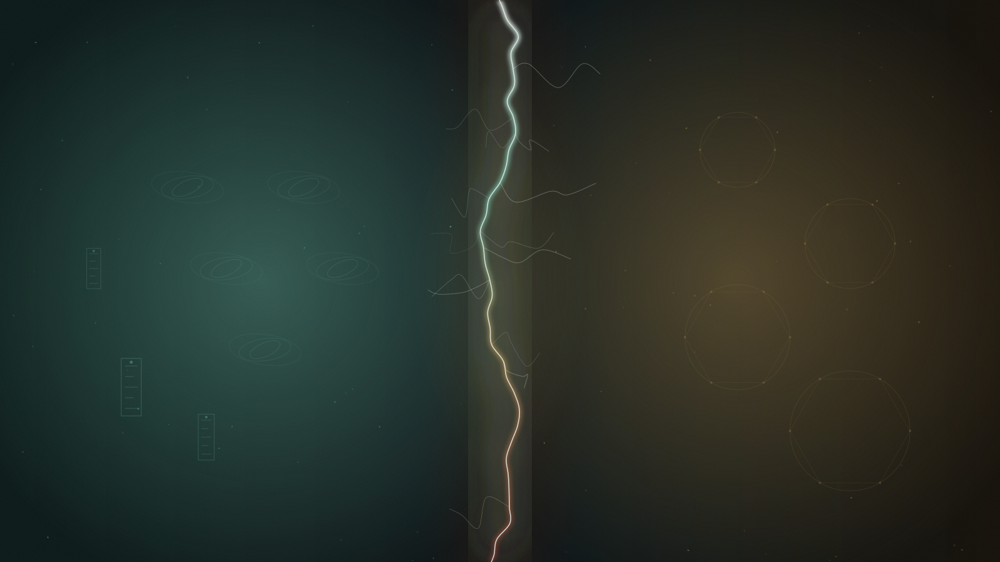
不是裂缝，是伤口。它发光，因为它还在疼。宽三里，每年东移七里，从不偏差——这是全大陆唯一一件两界都承认的事实。
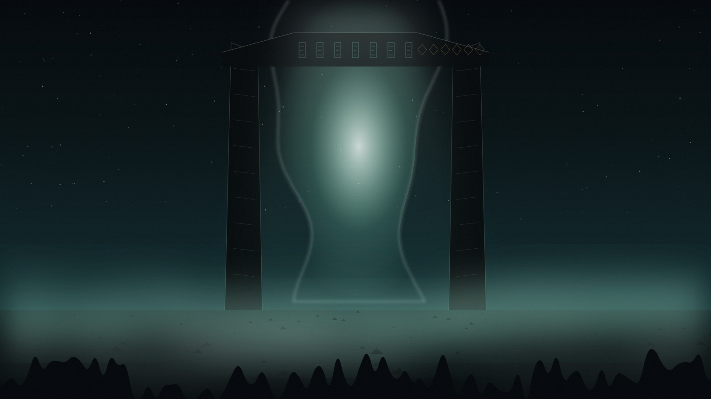
两界唯一可通行之处。门框一半刻着符箓，一半刻着七十二道刻度。守门人每七年换一次，因为七年之后，他们就开始听不懂自己那一侧的话。
界痕两侧的人，看着同一道光，得出了两个互不相容的结论。这不是正邪之争，也不是资源之争。 这是两种关于「存在」的定义，各自完备，各自自洽，因此无法调和。
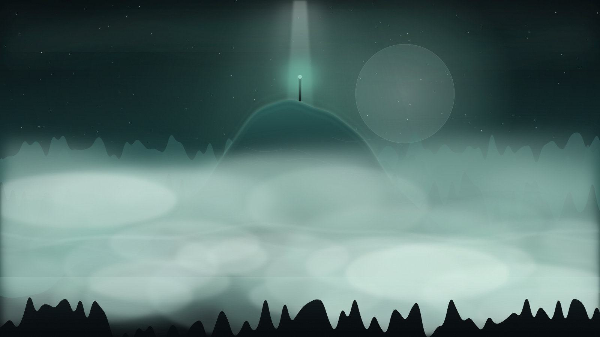
东侧。炼气士不取名，只取号——因为名字是外物，而外物会被夺走。他们把身体当作炉子， 把气当作柴，把一生当作一次漫长的燃烧。符是气的走向图，不是咒语；画符不是命令世界，是请世界顺着走。
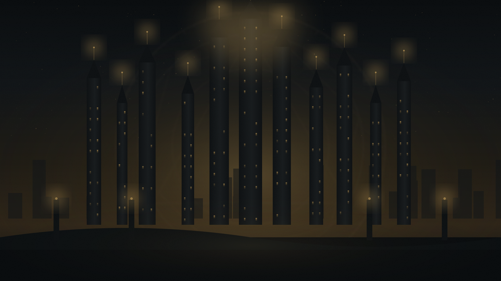
西侧。律法师相信：凡被命名的，才真实存在；凡未被命名的，可被抹去。他们的法阵是圆，圆上是七十二道刻度， 对应七十二个音节。名字是咒，改名等于改命。所以他们的孩子到七岁才取名——那是他们第一次真正出生。
他们从未同时出现在一个房间里。他们甚至不承认对方是人——玄洲说西侧的人「有名无身」， 奥瑞恩说东侧的人「有身无名」。但他们都做过同一件事：在夜里，独自走到界痕边上，往里看。

Xuan Zhou · 01
守碑人
昆仑碑前守了四十七年。他不识数，但记得碑上每一道刻痕的位置。他说碑不是用来记年份的，是用来记名字的——那些被界痕吞掉、两界都不再提起的名字。
「碑上刻的不是年份，是我们忘掉的名字。」
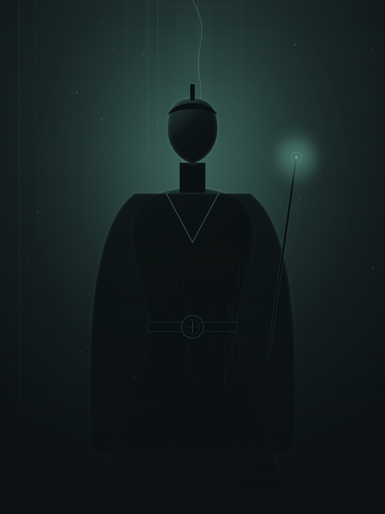
Xuan Zhou · 02
界痕测绘者
三十年，每年走一遍界痕，用步量，用绳量，用星量。他的图册有三十卷，每一卷的结论都一样：东移七里。他不信这个结论，所以他还在量。
「我量了三十年，它每年走七里，从不偏差。偏差的是我们。」

Xuan Zhou · 03
少年剑修
十七岁，剑很快，快过同门所有人。他没见过界战，只见过界战留下的空村子。他一直在想一个没人回答的问题：如果剑够快，能不能在东西被抹掉之前，把它抢回来。
「师父说剑要快。可我想知道，快过界痕，能不能追回什么。」
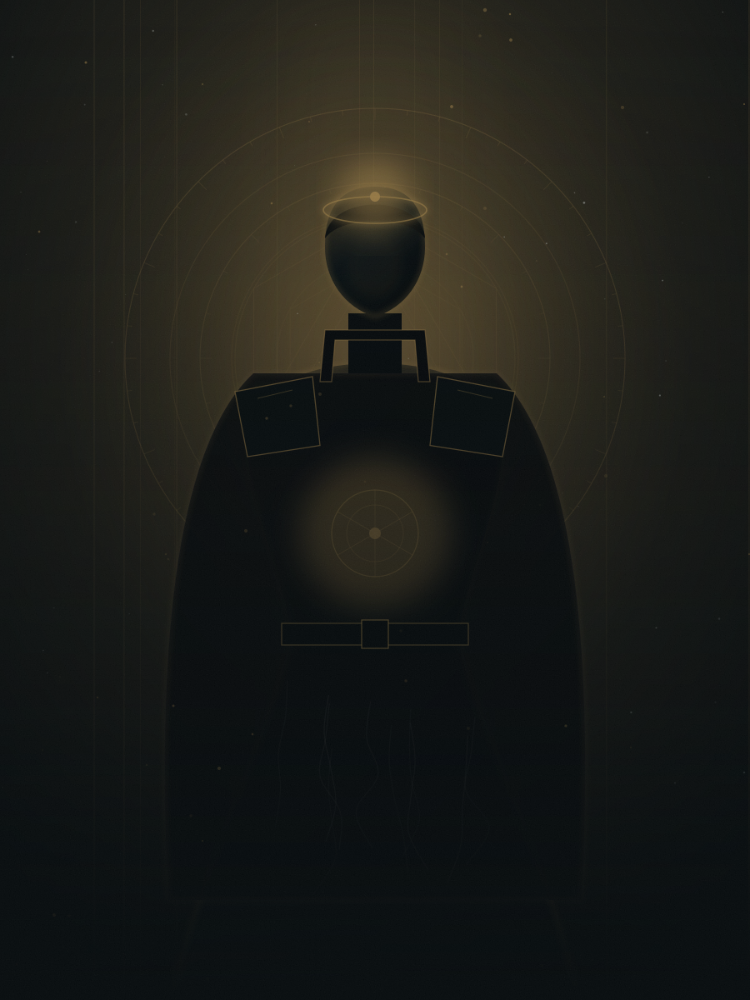
Orion · 01
首席律法师
七十二音节里，他能完整念出六十四个。剩下八个，念错一个就会抹掉自己。他主张对玄洲执行「除名」——不是杀死他们，是让世界不再记得他们曾经存在。
「凡未被命名者，不存于法。凡不存于法者，可被抹去。」

Orion · 02
星图师
她发现星图上有两个北。一个指向玄洲的昆仑，一个指向奥瑞恩地下的某处。她把这个发现报上去，第二天她的名字从所有档案里消失了三个时辰——那是警告。
「星图上有两个北。一个在玄洲，一个在我们脚下。」
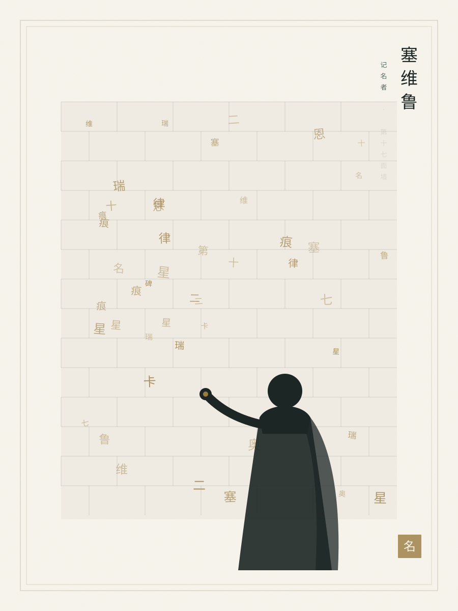
Orion · 03
界战统帅
打过三次界战。第一次为疆土，第二次为死者，第三次他站在阵前，发现自己说不出理由。他还是下令了。他现在每天念一遍自己的名字，怕忘。
「我打过三次界战。第三次——我不知道为什么。」
玄洲把山当作呼吸，奥瑞恩把城当作语法，界痕把两者都当作错误。 这三处地方，是整部纪年里被画过最多次的——因为它们是唯一三个，两界都承认存在的地方。
云海之上，九峰如齿。碑在最中间那座。峰顶终年不化的不是雪，是凝住的气。
黄铜的城，几何的城。每一块砖都有编号，每一条街都是一个可以念出来的句子。
宽三里，深不见底。夜里能听见里面有人在念名字，念到一半就停了。
纪年里有无数个日子，但只有三个瞬间被反复描画：门开的那一刻，旗倒的那一刻，碑立的那一刻。 前两个属于战争，最后一个属于记得的人。
每七年开一次，开三个时辰。两侧各派十二人入内，商定界痕的「合法位置」。 一百四十七年来，商定了三十一次，界痕一次也没有遵守。但门还是照开——因为不开门，就没有「商定」这件事； 没有商定，两界就只剩下战争。
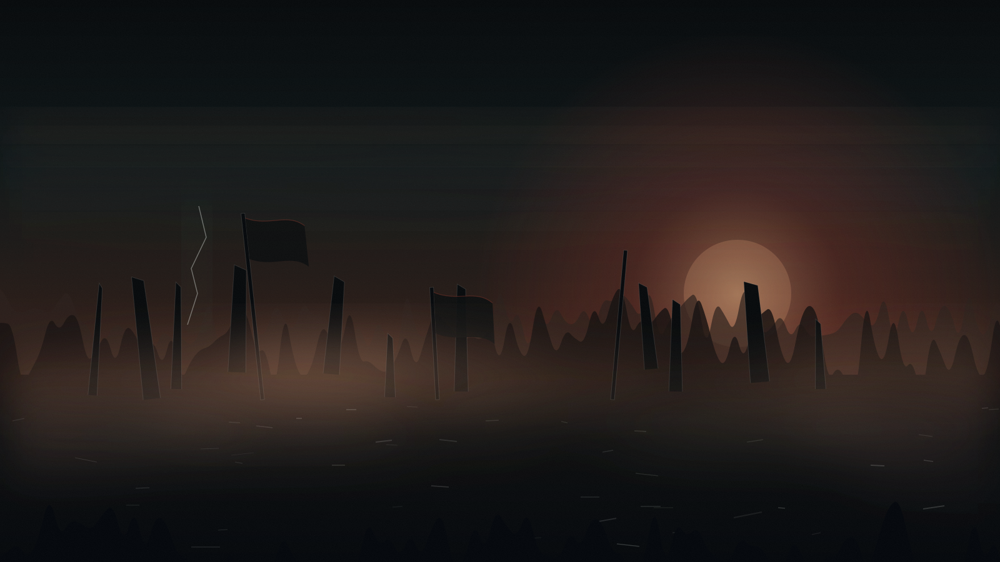
旗还在，人不在。第三次界战打了七年，双方都没有推进一里——因为界痕每年东移七里，战场自己会走。
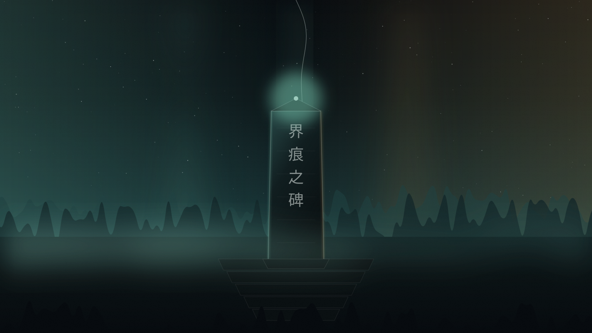
碑上四个字：界痕之碑。第四个字的最后一笔，是新的——因为每年都有人来补。
把三次界战画在同一张地图上，会看到一件荒谬的事：战场每年都在移动，而双方都以为自己在守土。 界痕不参与战争，它只是走。它走的时候，把所有人的「家」都变成了「前线」。
Epoch I · 裂痕之年
界痕出现五十三年后，两界第一次在痕边相遇。玄洲以为那是天罚的伤口，要封；奥瑞恩以为那是未被命名的空白，要填。双方都带着善意前来，然后打了起来。这一战只打了四十天，死了三千人——在后来两次界战面前，这个数字小得像一个注脚。但它确立了一件事：这道痕，不能由一方单独解释。
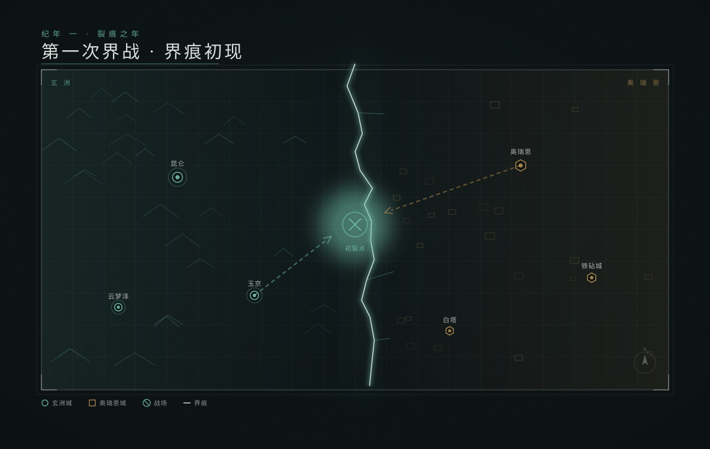
界痕位置、双方城池与主要战场。
图例：玉青圆点为玄洲城，黄铜方点为奥瑞恩城，交叉圆环为战场，白线为界痕。 打叉的城池表示该年已被除名或焚毁。
Epoch II · 焚城之年
界痕第一次越过玉京。玄洲的旧都陷落，白塔被焚。这一战打了十一年，是三次里最惨的一次。奥瑞恩的律法师在废墟上念了七十二个音节，把整座城从记录里除名——包括城里还活着的两万人。玄洲从此不再谈判，只守。
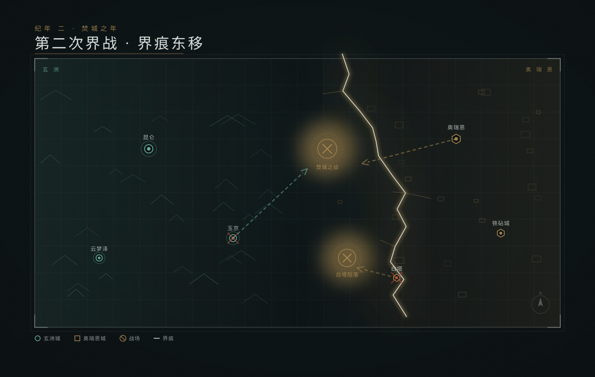
界痕位置、双方城池与主要战场。
图例：玉青圆点为玄洲城，黄铜方点为奥瑞恩城，交叉圆环为战场，白线为界痕。 打叉的城池表示该年已被除名或焚毁。
Epoch III · 未终之年
第三次界战没有正式宣战。它只是开始了，然后一直没有结束。双方在界痕两侧各驻军，每年界痕东移七里，两军就跟着东移七里。七年过去，战线没有推进一里，但战场已经向东走了四十九里。塞维鲁说，这一战他不知道为什么打。玉虚子说，他知道——为了让碑上那四个字还有人认。
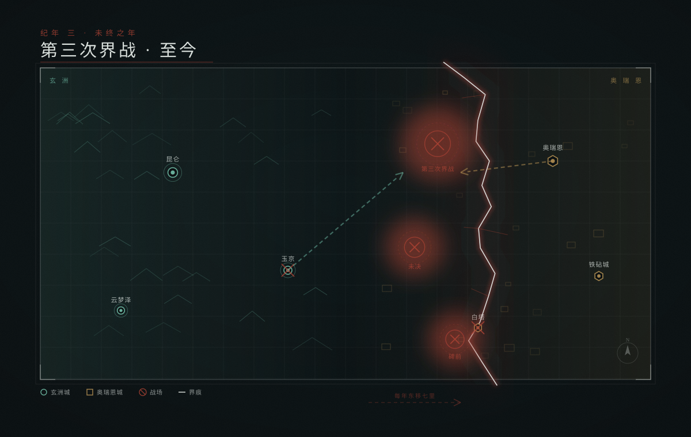
界痕位置、双方城池与主要战场。
图例：玉青圆点为玄洲城，黄铜方点为奥瑞恩城，交叉圆环为战场，白线为界痕。 打叉的城池表示该年已被除名或焚毁。
这段音景由四层构成：低频的地鸣（界痕本身）、中频的气流（玄洲）、高频的金属泛音（奥瑞恩）， 以及一层始终不解决的持续音——那是两界都无法命名的部分。它不循环情绪，它循环等待。
BGM · EPOCH
界痕之息
150 秒 · 单声道 · 无缝循环
点击右下角音景按钮开始。默认静音，不自动播放——这是对读者的基本尊重。
FOUR LAYERS
四层叠加，无鼓点，无旋律解决。最后一层永远差半个音，所以它听起来像「还没结束」。